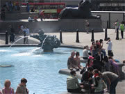
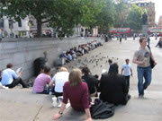
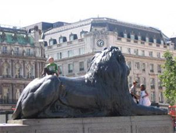
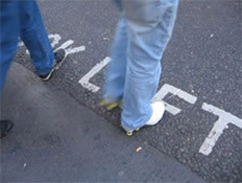
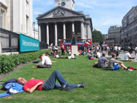
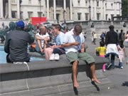

| |

|
|
Um dos momentos mais felizes da minha vida foi dentro daquele chafariz. Ficou numa foto que eu não sei quem bateu, nem exatamente que horas eram, mas era 9 de agosto de 2005, um dia de sol radiante.
Praça cheia, crianças brincando, uma senhora feliz, sorridente, sorrindo pra frente, pro nada. Gente subindo pelos leões dos monumentos, e gente espalhada pelas escadarias. E se apinhavam, se esbaldavam, tomavam café e sorvete. |
|  |
Custei a entender tudo aquilo, e por um momento pensei: devem estar esperando o ônibus. Esses ônibus de turismo que têm que dar a volta no quarteirão pra pegar a turma, rapidinho, porque ‘não tem vaga’.
Enfim, fui me aproximando.
Desci um degrau, depois mais um, parei na mureta de pedra, sei lá quando largamente adornada à lixa, e fiquei olhando simplesmente aquilo tudo, o movimento e a luz. Era tudo encantador. A paz de recostar na mureta e fotografar sem medo, e depois a praça cheia de gente estranha e bonita, e depois o tempo a cada minuto passando, e depois... Bom, fosse o que fosse depois, eu tinha tempo. Eu era dona do tempo. |
|
| |
Mas houve uma fração de segundo. Acordei daquela espécie de torpor cerebral quando me dei conta de que nenhum ônibus de turismo tirava aquela gente de lá. Então o que era? Era irresistível! E eu estava sendo abduzida! Um dia de sol de verão, longe da praia, raro e especialmente maravilhoso. Aquela turma não esperava nada, apenas ficava, e eu, ficava aos poucos.
Envolvida pela imagem da multidão que se espalhava comportadamente feliz pela praça, desci as escadas e me aproximei um pouco mais do chafariz - que, aliás, eram dois! Lindos! Água translúcida! Geladinha! E com meus animais prediletos cuspindo água! - A propósito, descobri o “geladinha” olhando pro lado, checando o cenário..., foi quando pude provar, com um mergulho de mão meio medroso, tão rápido como se despretensioso fosse, mão pra um lado, rosto dissimulado pro outro, algo com jeito de acidental, mas mentiroso, como se ignorante ou quase proibido - e não era! Vi que não era! |
|
 |
|
| |
|
|
|
|
E o tempo foi passando, e eu me espalhando aos poucos, e a menina quase caindo lá dentro; e a mistura de gente, de línguas, de cores de pele, e os cabelos malucos, e as roupas de hoje e de todos os tempos, e a altura do monumento, e em cima dele mais um monte, e ao redor, e subindo, e o grito confiante de que ele abriria os braços: “daddyyyy!”, e aquele relógio incrível ao fundo que só podia ser o Big Ben! “Ah...”, então pensei (também confiante e feliz): “... de-ve-ser-o-Big-Ben!!!”. E então, seguindo a tradição da minha mania japonesa, confirmando tudo visualmente, fotografei meu próprio braço com o relógio, e o relógio ao fundo, o de Greenwich, também confirmando tudo, e a minha hora era a mesma que a dele. Uma e meia da tarde. De Londres. A poucos passos da esquina das mulheres de preto, protestando silenciosamente contra a guerra e a violência. |
|
| Uma delas me viu, ou melhor, viu o meu olhar estrangeiro, viu que eu disse, só com o olhar, que eu não era dali e que ela era uma novidade, e ela então me perguntou sorrindo, esticando o panfleto na mão, quebrando o jejum do silêncio: “where are you from?”, e eu respondi orgulhosa, pronta resposta, tão pronta que saiu com um sotaque que já não era nem de lá nem de cá, meio assim de lugar nenhum: “Brasil!”; e ela sorriu de novo, fez alguma referência elogiosa a nós, mulheres brasileiras, ou a nós mulheres, simplesmente, ou ao ativismo das mulheres brasileiras, não sei, e eu então meio abobalhada, abalada de felicidade, e com cada detalhe, e com aquela tarde, e com ela sabendo que eu era do Brasil (e com o fato de que talvez eu ficasse na memória dela à noite), e eu fui andando, me reposicionando na praça, e a cada passo, e mais uma vez atrás de cada segundo, me sentindo um pouco parte daquilo tudo, do protesto, da esquina, da praça, do trânsito... ! |
|
|
|
| |
|
 |
 |
Se alguém batesse uma foto de Londres para sempre, naquele exato momento, naquela esquina, eu era parte dela. Como tudo ali que não se vê: o barulho, a marquinha do chão, o sonho de quem sonha na grama do meio da rua, o interior do museu.
No instante do tudo parado, uma ponta, uma mancha, uma sombra de mim estaria lá, esteve lá naquele quando em que o tempo pareceu grande, e nem deve ter passado tanto.
|
|
| |
|
|

Fotos: Raquel Boechat /
Acervo RBC
(a exceção daquela)
Praça: Trafalgar Square / London |
|
Vi o rapaz bonito, descalço.
Me animou.
Talvez tenha sido ele a bater a foto.
Vi o indiano descalço de calça arregaçada, turbante e celular.
Fotografei escondida.
Vi gente que entrava e saía.
Tirei o tênis.
E se foi a meia.
E arregacei a calça.
Coragem.
Entrei.
Gelada. Alívio e aventura.
Eu era um menino de rua.
Eu era a dona da praça.
Eu era Londres, e eu era livre.
Previsão do Tempo para o reveión 2007...
Londres: máxima de 10 C, com possibilidade de chuva, noite
às 3 e meia da tarde.
Rio de Janeiro: noite de lua, véspera de praia, calor, muito calor...
------
Do Natal até lá, (pelo menos) 163 dias para mais um dia de sol
em Londres - como aquele.
Falta quanto para se viver, em paz e segurança, numa Praça do Rio de Janeiro - como naquela?
------
Os primeiros atentados suicidas ocorridos em território britânico aconteceram na manhã do dia 07 de julho de 2005. 56 pessoas
morreram, 4 delas os próprios terroristas suicidas. Os ataques aconteceram em diferentes trens do Metrô de Londres e num ônibus,
perto do Museu Britânico.
15 dias depois de Londres, a vítima foi o brasileiro Jean Charles de Menezes, de 27 anos. Ele morreu tragicamente, com sete tiros na cabeça
e um no ombro, depois de ser confundido por agentes da Scotland Yard
com um terrorista que teria participado dos atentados.
A tarde de paz e sol desta crônica aconteceu, de fato, no dia 09 de
agosto de 2005, 33 dias após o ataque ao metrô, 18 dias depois da
morte
de Jean Charles.
------
|
| |
|
|
|